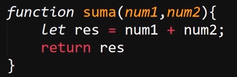
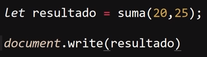
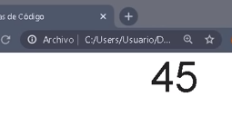

En una función es posble el enivarle uno o más datos en particular para que esta los pueda emplear en su proseso, para hacerlo se emplean los parentesis que forman parte de la estrucutra de las funciones, dentro de estos se definiran una varible local de la función por cada dato que esta necesite para operar.
De este modo al realizar el llamado de la función se ingresara los datos dentro de los parentesis que acompañan al nombre de esta, los cuales seran almacenados por las varibles declaradas en la formulación de la función de esta forma:
Ejemplo

En este ejemplo se puede apreciar el como los parentesis de la estrucura de una función se definen dos variables "num1" y "num2" las cuales recibiran los datos proveidos para la ejecución de la función, a la vez que estos varibles son operadas por el codigo dentro de esta.
Ejecución

Resultado

En este segundo ejemplo se llama la función "suma" a la vez que se asigna a una varible llamada "resultado" para poder guardar los datos retornados por esta, se puede apreciar el como al realizar el llamado de la función se envian dos datos dentro de los parentesis de esta (20 y 25), los cuales seran recibidos por las varobles de la imagen anterior y operados por la función, de ese modo resultadon en el valor 45 el cual es retornado hasta la varible "resultado".
Deste modo una función puede ser utilizada cada vez que sea necesario ya que en cada caso con enviar los datos pertinentes se obtendra un rsultado en base a estos.
Nota: En el caso de que la función no requiera de ningun parametro simplemte se incorporan los parantesis a la estrucutra de functión dejandolos bacios, ya que estos forman parte da la sintaxis de estas.
Nota: Las funciones tienen un alcanse Global, eso quiere decir que estan disponibles para utilizarse en todo el documento JS, por otro lado las varibles defidas dentro de estas solo deben tener un alcanse regional, esto es lo mejor para evitar cualquier tipo de conflicto o error en el sistema. Por ello es importante definir las varibles como "let", ya que de no espesificarse JavaScrip por defecto las definira las varibles como "var" lo que les dara un alcanse global generando dichos conflictos.